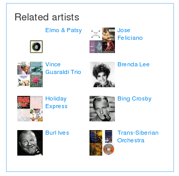
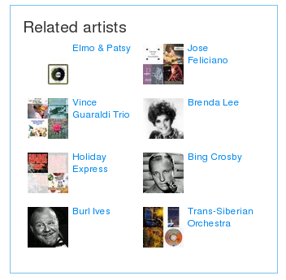

One
Llama is a music recommender that uses "acoustic analysis, cultural
analysis and collaborative filtering tools for music navigation,
discovery and search. On their website they say
One Llama uses a
combination of Collaborative Filtering and Audio Similarity modeling to
generate recommendations. Our model harvests cultural references and
social networking data about each track, and listens to the audio using
an advanced "virtual ear." The result is a stronger combined logic for
all our recommendations. The One Llama method has the advantage of being
able to give intelligent recommendations for new audio tracks
immediately while becoming increasingly smarter as additional
information is collected about the tracks from playlists, downloads,
user feedback, etc.
So with all that advanced mojo, one would expect some pretty good
recommendations. Here's a recommendation based on the seed song 'Hey
Jude' (I chose the Elvis version because they didn't seem to have the
Beatles version in their catalog).
There's no doubt that these songs are "like 'Hey Jude'", but somehow the
recommendation lacks subtlety and novelty of a real recommendation.
Clearly the songs are not acoustically similar (Arthur Fielder vs. Tiny
Tim?), and I can't imagine any set of users that would be listening to
this set of song, so this is not being driven by a collaborative
filtering algorithm. It seems that, at least for this recommendation,
the primary driving force is metadata similarity. It is almost as if
they just grabbed the Musicbrainz track data, tossed it all into a text
similarity engine and turned the crank to get these similarities.
Zac points out another case where One Llama seems to be relying mostly
on metadata. Here's a playlist that One LLama generates for songs
similar to "Let Go" by Frou Frou. The set seems mostly reasonable from
an acoustic point of view - the playlist could have been constructed by
an expert - and in fact it was. The songs (with one exception) can all
be found on the Garden State soundtrack.
This is probably what one could expect from a collaborative filtering
system. Lots of music listeners have bought the soundtrack. Any good CF
algorithm will notice this and tie the items together. However, I don't
think that is what is going on here. Looking at the One LLama playlist,
there is one song that is not on the Garden State album. One Llama has
added The Postal Service's 'Such Great Heights' to the playlist, while
the Garden State has the cover of 'Such Great Heights' by Iron &
Wine - although this is a cover, they sound very different; one is
electronic-noise-pop, while the other is strictly acoustic. I suspect
that, as with the Hey Jude example, One Llama is relying mostly on
metadata similarity to determine similarity
Here's the track list for the Garden State:
Using metadata to generate track similarity is not inherently bad. It
makes sense to use what works best. A young recommender company like
One Llama doesn't have the deep user data necessary to generate good CF
recommendations. Creating recommendations based on automatic acoustic
analysis is really hard, acoustic-based recommendations are frequently
prone to making mistakes that no human would make. I suspect that One
Llama has adjusted the dials on their recommender to give more weight to
the metadata until they get more user data and their automated analysis
is up to par.
 This is one of my favorite freakomendations. iTunes suggests that if
you like "Baby One More Time" by Britney Spears, you might like the "Report on Pre-War Intelligence on Iraq". This
recommendation just doesn't seem to make any sense in any context.
iTunes has lots of users so presumably they have lots of data and
Britney Spears is a very popular artist - so this can't be a cold start
problem. Something went awry somewhere. Or perhaps there's some reason - there is a Britney Spears / Bob Dole connection - or maybe the lyrics are some sort of subtle commentary on America's attitude toward Iraq. Hit me baby one more time indeed.
This is one of my favorite freakomendations. iTunes suggests that if
you like "Baby One More Time" by Britney Spears, you might like the "Report on Pre-War Intelligence on Iraq". This
recommendation just doesn't seem to make any sense in any context.
iTunes has lots of users so presumably they have lots of data and
Britney Spears is a very popular artist - so this can't be a cold start
problem. Something went awry somewhere. Or perhaps there's some reason - there is a Britney Spears / Bob Dole connection - or maybe the lyrics are some sort of subtle commentary on America's attitude toward Iraq. Hit me baby one more time indeed.


 
